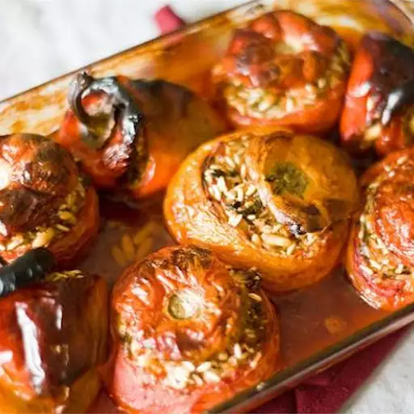

Yamista
Home

What is Yamista?
These Greek stuffed vegetables, called "Yamista,” are filled with a delicious mixture of rice, oregano, onion and garlic baked in a rich tomato sauce.
Ingredients
- 8 large ripe tomatoes
- 4 large green bell peppers
- ¼ cup butter
- 1 onion, diced
- 1 clove garlic, minced, or to taste
- 2 pounds ground beef chuck
- 2 tablespoons soy sauce
- 1 tablespoon seasoned salt
- 1 tablespoon ground black pepper
- ½ cup water
- 1 ½ cups converted (parboiled) rice (such as Uncle Ben's®)
- ½ cup olive oil
Steps
- Cut off tops of tomatoes, leaving a corner still attached to create a lid. Scoop out insides of tomatoes and transfer to a large bowl; squeeze juices out of tomatoes.
- Cut off tops of green peppers and reserve for later use; scoop out seeds and membranes.
- Arrange tomatoes and bell peppers in an 11x17-inch baking dish.
- Preheat the oven to 375 degrees F (190 degrees C).
- Heat butter in a large skillet over medium heat; cook and stir onion and garlic in the melted butter until softened, 5 to 10 minutes. Add ground beef, soy sauce, seasoned salt, and black pepper. Cook until beef is browned and crumbly, 5 to 10 minutes.
- Mix squeezed tomato insides and water into browned beef mixture; bring to a simmer and cook for about 15 minutes. Add rice and bring to a boil; remove skillet from heat.
- Spoon beef-rice mixture into tomatoes; place tops onto filled tomatoes and arrange them into the baking dish with lid sides down.
- Stuff bell peppers with beef-rice mixture and top with reserved lids; lay bell peppers sideways in the baking dish. Pour olive oil over stuffed tomatoes and bell peppers; season with salt and pepper.
- Bake in the preheated oven for 30 minutes. Turn bell peppers and continue baking until bell peppers and tomatoes are softened, about 30 more minutes.
Check out our other dishes here!